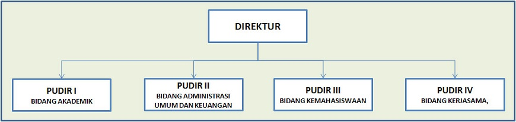

Politeknik Negeri Jakarta dipimpin oleh
seorang Direktur.
Seorang Direktur mempunyai Pembantu Direktur(PUDIR), yaitu PUDIR I Bidang
Akademik, menangani bidang akademik mahasiswa di PNJ.
Lalu PUDIR II Bidang Administrasi Umum dan Keuangan,
menangani bidang Administrasi Umum dan Keuangan di PNJ.
Lalu PUDIR III Bidang Kemahasiswaan,
menangani kegiatan kemahasiswaan di PNJ.
Lalu PUDIR IV Bidang Kerjasama, menangani kerjasama
PNJ dengan perusahaan atau institusi lain.
Lalu di setiap Jurusan mempunyai Ketua Jurusan (Kajur) masing-masing
yang mengatur jalannya perkuliahan di masing-masing jurusan.
Abdillah, S.E.,M.Si.
Direktur Politeknik Negeri Jakarta tahun 2014
Direktur Politeknik Negeri Jakarta tahun 2014
Fachruddin, S.T.,M.T.
PUDIR I Bidang Akademik tahun 2014
PUDIR I Bidang Akademik tahun 2014
Agus Supriyadi, S.E. M.M.
PUDIR II Bidang Administrasi dan Keuangan tahun 2014
PUDIR II Bidang Administrasi dan Keuangan tahun 2014
Dra. Lenny Brida,Dipl.TESOL,M.Psi
PUDIR III Bidang Kemahasiswaan tahun 2014
PUDIR III Bidang Kemahasiswaan tahun 2014
Dr.sc.Zainal Nur Arifin, Dipl. Ing, HTL, M.T.
PUDIR IV Bidang Kerjasama tahun 2014
PUDIR IV Bidang Kerjasama tahun 2014
Putera Agung M.A,S.T, M.T.,Ph.D
Ketua Jurusan Teknik Sipil tahun 2014
Ketua Jurusan Teknik Sipil tahun 2014
Tatun Hayatun Nufus, M.Si
Ketua Jurusan Teknik Mesin tahun 2014
Ketua Jurusan Teknik Mesin tahun 2014
Iwa Sudradjat, S.T., M.T.
Ketua Jurusan Teknik Elektro tahun 2014
Ketua Jurusan Teknik Elektro tahun 2014
Dra. R. Elly Mirati M.M.
Ketua Jurusan Akuntansi tahun 2014
Ketua Jurusan Akuntansi tahun 2014
Dra. R. Elly Mirati M.M.
Ketua Jurusan Administrasi Bisnis tahun 2014
Ketua Jurusan Administrasi Bisnis tahun 2014
Ade Haryani, S.E., M.M.
Ketua Jurusan Teknik Grafika dan Penerbitan tahun 2014
Ketua Jurusan Teknik Grafika dan Penerbitan tahun 2014
Nur Fauzi Soelaiman, S.T., M.Kom
Ketua Jurusan Teknik Informatika dan Komputer tahun 2014
Ketua Jurusan Teknik Informatika dan Komputer tahun 2014